Parcours « 1-carnet-ajout-suppression » étape 1 (goto) : HTTP 404 : GET http://localhost:3103/_vercel/speed-insights/script.js ; console.error : Failed to load resource: the server responded with a status of 404 (Not Found) ; console.error : Refused to execute script from 'http://localhost:3103/_vercel/speed-insights/script.js' because its MIME type ('text/plain') is not executable, and strict MIME type checking is enabled. ; requête échouée : GET http://localhost:3103/_vercel/speed-insights/script.js (net::ERR_ABORTED) ; requête échouée : GET http://localhost:3103/nutrition/journal?_rsc=RJfCJDPo2_81Gl6r (net::ERR_ABORTED) ; requête échouée : GET http://localhost:3103/nutrition/menus?_rsc=IaIzwq4BH3-xGixr (net::ERR_ABORTED) ; requête échouée : GET http://localhost:3103/notes?_rsc=Sn1z23icjpob6HFI (net::ERR_ABORTED)
Parcours « 1-carnet-ajout-suppression » étape 8 (click) : requête échouée : GET http://localhost:3103/notes?_rsc=Sn1z23icjpob6HFI (net::ERR_ABORTED) ; requête échouée : GET http://localhost:3103/nutrition/journal?_rsc=RJfCJDPo2_81Gl6r (net::ERR_ABORTED) ; requête échouée : POST http://localhost:3103/nutrition (net::ERR_ABORTED) ; requête échouée : GET http://localhost:3103/nutrition/menus?_rsc=IaIzwq4BH3-xGixr (net::ERR_ABORTED)
Parcours « 1-carnet-ajout-suppression » étape 19 (reload) : requête échouée : GET http://localhost:3103/nutrition/journal?_rsc=RJfCJDPo2_81Gl6r (net::ERR_ABORTED) ; HTTP 404 : GET http://localhost:3103/_vercel/speed-insights/script.js ; console.error : Failed to load resource: the server responded with a status of 404 (Not Found) ; console.error : Refused to execute script from 'http://localhost:3103/_vercel/speed-insights/script.js' because its MIME type ('text/html') is not executable, and strict MIME type checking is enabled. ; requête échouée : GET http://localhost:3103/_vercel/speed-insights/script.js (net::ERR_ABORTED)
Parcours « 2-carnet-jours-limites » étape 1 (goto) : HTTP 404 : GET http://localhost:3103/_vercel/speed-insights/script.js ; console.error : Failed to load resource: the server responded with a status of 404 (Not Found) ; console.error : Refused to execute script from 'http://localhost:3103/_vercel/speed-insights/script.js' because its MIME type ('text/plain') is not executable, and strict MIME type checking is enabled. ; requête échouée : GET http://localhost:3103/_vercel/speed-insights/script.js (net::ERR_ABORTED) ; requête échouée : GET http://localhost:3103/nutrition/menus?_rsc=mOWeNoMD-30R7sze (net::ERR_ABORTED)
Parcours « 2-carnet-jours-limites » étape 16 (wait) : requête échouée : GET http://localhost:3103/notes?_rsc=ReFE4Y_505v8bis0 (net::ERR_ABORTED) ; requête échouée : GET http://localhost:3103/nutrition/journal?_rsc=NCnCARwDGRMA6JXs (net::ERR_ABORTED) ; requête échouée : GET http://localhost:3103/nutrition/menus?_rsc=mOWeNoMD-30R7sze (net::ERR_ABORTED) ; requête échouée : POST http://localhost:3103/nutrition/journal?date=2026-11-14 (net::ERR_ABORTED)
Parcours « 2-carnet-jours-limites » étape 17 (reload) : HTTP 404 : GET http://localhost:3103/_vercel/speed-insights/script.js ; console.error : Failed to load resource: the server responded with a status of 404 (Not Found) ; console.error : Refused to execute script from 'http://localhost:3103/_vercel/speed-insights/script.js' because its MIME type ('text/html') is not executable, and strict MIME type checking is enabled. ; requête échouée : GET http://localhost:3103/_vercel/speed-insights/script.js (net::ERR_ABORTED) ; requête échouée : GET http://localhost:3103/nutrition/menus?_rsc=mOWeNoMD-30R7sze (net::ERR_ABORTED)
Parcours « 2-carnet-jours-limites » étape 18 (goto) : requête échouée : GET http://localhost:3103/nutrition/menus?_rsc=mOWeNoMD-30R7sze (net::ERR_ABORTED) ; requête échouée : GET http://localhost:3103/notes?_rsc=ReFE4Y_505v8bis0 (net::ERR_ABORTED) ; HTTP 404 : GET http://localhost:3103/_vercel/speed-insights/script.js ; console.error : Failed to load resource: the server responded with a status of 404 (Not Found) ; console.error : Refused to execute script from 'http://localhost:3103/_vercel/speed-insights/script.js' because its MIME type ('text/html') is not executable, and strict MIME type checking is enabled. ; requête échouée : GET http://localhost:3103/_vercel/speed-insights/script.js (net::ERR_ABORTED)
Parcours « 2-carnet-jours-limites » étape 19 (goto) : HTTP 404 : GET http://localhost:3103/_vercel/speed-insights/script.js ; console.error : Failed to load resource: the server responded with a status of 404 (Not Found) ; console.error : Refused to execute script from 'http://localhost:3103/_vercel/speed-insights/script.js' because its MIME type ('text/html') is not executable, and strict MIME type checking is enabled. ; requête échouée : GET http://localhost:3103/_vercel/speed-insights/script.js (net::ERR_ABORTED) ; requête échouée : GET http://localhost:3103/nutrition/menus?_rsc=mOWeNoMD-30R7sze (net::ERR_ABORTED) ; requête échouée : GET http://localhost:3103/notes?_rsc=ReFE4Y_505v8bis0 (net::ERR_ABORTED) ; requête échouée : GET http://localhost:3103/nutrition?_rsc=lV44R-dSovzs4I3R (net::ERR_ABORTED)
Parcours « 3-menus-mange » étape 1 (goto) : HTTP 404 : GET http://localhost:3103/_vercel/speed-insights/script.js ; console.error : Failed to load resource: the server responded with a status of 404 (Not Found) ; console.error : Refused to execute script from 'http://localhost:3103/_vercel/speed-insights/script.js' because its MIME type ('text/plain') is not executable, and strict MIME type checking is enabled. ; requête échouée : GET http://localhost:3103/_vercel/speed-insights/script.js (net::ERR_ABORTED) ; requête échouée : GET http://localhost:3103/nutrition/journal?_rsc=j6EllVFPEmHf4CFf (net::ERR_ABORTED) ; requête échouée : GET http://localhost:3103/notes?_rsc=tc2lWmmGE2MZ9vTY (net::ERR_ABORTED) ; requête échouée : GET http://localhost:3103/nutrition?_rsc=3bRCAcPmtUP2qLBm (net::ERR_ABORTED)
Parcours « 3-menus-mange » étape 4 (goto) : HTTP 404 : GET http://localhost:3103/_vercel/speed-insights/script.js ; console.error : Failed to load resource: the server responded with a status of 404 (Not Found) ; console.error : Refused to execute script from 'http://localhost:3103/_vercel/speed-insights/script.js' because its MIME type ('text/html') is not executable, and strict MIME type checking is enabled. ; requête échouée : GET http://localhost:3103/_vercel/speed-insights/script.js (net::ERR_ABORTED) ; requête échouée : GET http://localhost:3103/nutrition/journal?_rsc=RJfCJDPo2_81Gl6r (net::ERR_ABORTED) ; requête échouée : GET http://localhost:3103/nutrition/menus?_rsc=IaIzwq4BH3-xGixr (net::ERR_ABORTED) ; requête échouée : GET http://localhost:3103/notes?_rsc=Sn1z23icjpob6HFI (net::ERR_ABORTED)
Parcours « 3-menus-mange » étape 6 (goto) : requête échouée : GET http://localhost:3103/nutrition/journal?_rsc=j6EllVFPEmHf4CFf (net::ERR_ABORTED) ; requête échouée : GET http://localhost:3103/notes?_rsc=tc2lWmmGE2MZ9vTY (net::ERR_ABORTED) ; requête échouée : GET http://localhost:3103/nutrition?_rsc=3bRCAcPmtUP2qLBm (net::ERR_ABORTED) ; HTTP 404 : GET http://localhost:3103/_vercel/speed-insights/script.js ; console.error : Failed to load resource: the server responded with a status of 404 (Not Found) ; console.error : Refused to execute script from 'http://localhost:3103/_vercel/speed-insights/script.js' because its MIME type ('text/html') is not executable, and strict MIME type checking is enabled. ; requête échouée : GET http://localhost:3103/_vercel/speed-insights/script.js (net::ERR_ABORTED)
Parcours « 3-menus-mange » étape 9 (goto) : requête échouée : GET http://localhost:3103/notes?_rsc=Sn1z23icjpob6HFI (net::ERR_ABORTED) ; requête échouée : GET http://localhost:3103/nutrition/menus?_rsc=IaIzwq4BH3-xGixr (net::ERR_ABORTED) ; HTTP 404 : GET http://localhost:3103/_vercel/speed-insights/script.js ; console.error : Failed to load resource: the server responded with a status of 404 (Not Found) ; console.error : Refused to execute script from 'http://localhost:3103/_vercel/speed-insights/script.js' because its MIME type ('text/html') is not executable, and strict MIME type checking is enabled. ; requête échouée : GET http://localhost:3103/_vercel/speed-insights/script.js (net::ERR_ABORTED)
Parcours « 3-menus-mange » étape 11 (goto) : requête échouée : GET http://localhost:3103/nutrition/journal?_rsc=j6EllVFPEmHf4CFf (net::ERR_ABORTED) ; requête échouée : GET http://localhost:3103/notes?_rsc=tc2lWmmGE2MZ9vTY (net::ERR_ABORTED) ; requête échouée : GET http://localhost:3103/nutrition?_rsc=3bRCAcPmtUP2qLBm (net::ERR_ABORTED) ; HTTP 404 : GET http://localhost:3103/_vercel/speed-insights/script.js ; console.error : Failed to load resource: the server responded with a status of 404 (Not Found) ; console.error : Refused to execute script from 'http://localhost:3103/_vercel/speed-insights/script.js' because its MIME type ('text/html') is not executable, and strict MIME type checking is enabled. ; requête échouée : GET http://localhost:3103/_vercel/speed-insights/script.js (net::ERR_ABORTED)
Parcours « 3-menus-mange » étape 14 (reload) : requête échouée : POST http://localhost:3103/nutrition/menus (net::ERR_ABORTED) ; HTTP 404 : GET http://localhost:3103/_vercel/speed-insights/script.js ; console.error : Failed to load resource: the server responded with a status of 404 (Not Found) ; console.error : Refused to execute script from 'http://localhost:3103/_vercel/speed-insights/script.js' because its MIME type ('text/html') is not executable, and strict MIME type checking is enabled. ; requête échouée : GET http://localhost:3103/_vercel/speed-insights/script.js (net::ERR_ABORTED) ; requête échouée : GET http://localhost:3103/nutrition/journal?_rsc=j6EllVFPEmHf4CFf (net::ERR_ABORTED) ; requête échouée : GET http://localhost:3103/notes?_rsc=tc2lWmmGE2MZ9vTY (net::ERR_ABORTED)
Parcours « 3-menus-mange » étape 20 (reload) : HTTP 404 : GET http://localhost:3103/_vercel/speed-insights/script.js ; console.error : Failed to load resource: the server responded with a status of 404 (Not Found) ; console.error : Refused to execute script from 'http://localhost:3103/_vercel/speed-insights/script.js' because its MIME type ('text/html') is not executable, and strict MIME type checking is enabled. ; requête échouée : GET http://localhost:3103/_vercel/speed-insights/script.js (net::ERR_ABORTED) ; requête échouée : GET http://localhost:3103/notes?_rsc=tc2lWmmGE2MZ9vTY (net::ERR_ABORTED) ; requête échouée : GET http://localhost:3103/nutrition?_rsc=3bRCAcPmtUP2qLBm (net::ERR_ABORTED)
Parcours « 4-menus-courses-copie » étape 1 (goto) : HTTP 404 : GET http://localhost:3103/_vercel/speed-insights/script.js ; console.error : Failed to load resource: the server responded with a status of 404 (Not Found) ; console.error : Refused to execute script from 'http://localhost:3103/_vercel/speed-insights/script.js' because its MIME type ('text/plain') is not executable, and strict MIME type checking is enabled. ; requête échouée : GET http://localhost:3103/_vercel/speed-insights/script.js (net::ERR_ABORTED) ; requête échouée : GET http://localhost:3103/nutrition/journal?_rsc=j6EllVFPEmHf4CFf (net::ERR_ABORTED) ; requête échouée : GET http://localhost:3103/notes?_rsc=tc2lWmmGE2MZ9vTY (net::ERR_ABORTED) ; requête échouée : GET http://localhost:3103/nutrition?_rsc=3bRCAcPmtUP2qLBm (net::ERR_ABORTED)
Parcours « 4-menus-courses-copie » étape 13 (goto) : HTTP 404 : GET http://localhost:3103/_vercel/speed-insights/script.js ; console.error : Failed to load resource: the server responded with a status of 404 (Not Found) ; console.error : Refused to execute script from 'http://localhost:3103/_vercel/speed-insights/script.js' because its MIME type ('text/html') is not executable, and strict MIME type checking is enabled. ; requête échouée : GET http://localhost:3103/_vercel/speed-insights/script.js (net::ERR_ABORTED) ; requête échouée : GET http://localhost:3103/nutrition?_rsc=oyVt-Ax8zMpCuAam (net::ERR_ABORTED)
Parcours « 4-menus-courses-copie » étape 15 (goto) : HTTP 404 : GET http://localhost:3103/_vercel/speed-insights/script.js ; console.error : Failed to load resource: the server responded with a status of 404 (Not Found) ; console.error : Refused to execute script from 'http://localhost:3103/_vercel/speed-insights/script.js' because its MIME type ('text/html') is not executable, and strict MIME type checking is enabled. ; requête échouée : GET http://localhost:3103/_vercel/speed-insights/script.js (net::ERR_ABORTED) ; requête échouée : GET http://localhost:3103/notes?_rsc=tc2lWmmGE2MZ9vTY (net::ERR_ABORTED) ; requête échouée : GET http://localhost:3103/nutrition/journal?_rsc=j6EllVFPEmHf4CFf (net::ERR_ABORTED) ; requête échouée : GET http://localhost:3103/nutrition?_rsc=3bRCAcPmtUP2qLBm (net::ERR_ABORTED)
Parcours « 4-menus-courses-copie » étape 19 (wait) : requête échouée : GET http://localhost:3103/nutrition/menus?semaine=2026-11-16&_rsc=BU5HpMWOiDd8TVZv (net::ERR_ABORTED) ; requête échouée : GET http://localhost:3103/notes?_rsc=gFW0MxFV8ywPcvsL (net::ERR_ABORTED) ; requête échouée : POST http://localhost:3103/nutrition/menus?semaine=2026-11-23 (net::ERR_ABORTED)
Parcours « 4-menus-courses-copie » étape 20 (reload) : requête échouée : GET http://localhost:3103/nutrition?_rsc=3bRCAcPmtUP2qLBm (net::ERR_ABORTED) ; HTTP 404 : GET http://localhost:3103/_vercel/speed-insights/script.js ; console.error : Failed to load resource: the server responded with a status of 404 (Not Found) ; console.error : Refused to execute script from 'http://localhost:3103/_vercel/speed-insights/script.js' because its MIME type ('text/html') is not executable, and strict MIME type checking is enabled. ; requête échouée : GET http://localhost:3103/_vercel/speed-insights/script.js (net::ERR_ABORTED)
Parcours « 4-menus-courses-copie » étape 24 (back) : requête échouée : GET http://localhost:3103/nutrition/menus?semaine=2026-11-16&_rsc=rMnu_bfo-ZaWN6Hh (net::ERR_ABORTED) ; HTTP 404 : GET http://localhost:3103/_vercel/speed-insights/script.js ; console.error : Failed to load resource: the server responded with a status of 404 (Not Found) ; console.error : Refused to execute script from 'http://localhost:3103/_vercel/speed-insights/script.js' because its MIME type ('text/html') is not executable, and strict MIME type checking is enabled. ; requête échouée : GET http://localhost:3103/_vercel/speed-insights/script.js (net::ERR_ABORTED)
Parcours « 5-recette-creer-modifier » étape 1 (goto) : HTTP 404 : GET http://localhost:3103/_vercel/speed-insights/script.js ; console.error : Failed to load resource: the server responded with a status of 404 (Not Found) ; console.error : Refused to execute script from 'http://localhost:3103/_vercel/speed-insights/script.js' because its MIME type ('text/plain') is not executable, and strict MIME type checking is enabled. ; requête échouée : GET http://localhost:3103/_vercel/speed-insights/script.js (net::ERR_ABORTED) ; requête échouée : GET http://localhost:3103/notes?_rsc=V6LDxjTYF9Hcqkq- (net::ERR_ABORTED) ; requête échouée : GET http://localhost:3103/nutrition?_rsc=sw2pi3DjxZBW9EPd (net::ERR_ABORTED) ; requête échouée : GET http://localhost:3103/nutrition/journal?_rsc=gTQNfE_KcskDALzN (net::ERR_ABORTED) ; requête échouée : GET http://localhost:3103/nutrition/menus?_rsc=P_U07AWgBD50QkDo (net::ERR_ABORTED) ; requête échouée : GET http://localhost:3103/nutrition/recettes/00000000-0000-4000-8000-000000000216?_rsc=LdB1tpLyTapDRyuB (net::ERR_ABORTED)
Parcours « 5-recette-creer-modifier » étape 10 (wait) : requête échouée : GET http://localhost:3103/notes?_rsc=V6LDxjTYF9Hcqkq- (net::ERR_ABORTED) ; requête échouée : POST http://localhost:3103/nutrition/recettes (net::ERR_ABORTED) ; requête échouée : GET http://localhost:3103/nutrition/recettes?_rsc=e3EQ4dxCrm2RCKbS (net::ERR_ABORTED) ; requête échouée : GET http://localhost:3103/nutrition/journal?_rsc=gTQNfE_KcskDALzN (net::ERR_ABORTED) ; requête échouée : GET http://localhost:3103/nutrition/menus?_rsc=P_U07AWgBD50QkDo (net::ERR_ABORTED) ; requête échouée : GET http://localhost:3103/nutrition/recettes/00000000-0000-4000-8000-000000000216?_rsc=LdB1tpLyTapDRyuB (net::ERR_ABORTED)
Parcours « 5-recette-creer-modifier » étape 12 (goto) : HTTP 404 : GET http://localhost:3103/_vercel/speed-insights/script.js ; console.error : Failed to load resource: the server responded with a status of 404 (Not Found) ; console.error : Refused to execute script from 'http://localhost:3103/_vercel/speed-insights/script.js' because its MIME type ('text/html') is not executable, and strict MIME type checking is enabled. ; requête échouée : GET http://localhost:3103/_vercel/speed-insights/script.js (net::ERR_ABORTED) ; requête échouée : GET http://localhost:3103/nutrition/journal?_rsc=gTQNfE_KcskDALzN (net::ERR_ABORTED) ; requête échouée : GET http://localhost:3103/nutrition/menus?_rsc=P_U07AWgBD50QkDo (net::ERR_ABORTED) ; requête échouée : GET http://localhost:3103/nutrition/recettes/00000000-0000-4000-8000-000000000216?_rsc=LdB1tpLyTapDRyuB (net::ERR_ABORTED) ; requête échouée : GET http://localhost:3103/notes?_rsc=V6LDxjTYF9Hcqkq- (net::ERR_ABORTED) ; requête échouée : GET http://localhost:3103/nutrition?_rsc=sw2pi3DjxZBW9EPd (net::ERR_ABORTED)
Parcours « 5-recette-creer-modifier » étape 22 (reload) : HTTP 404 : GET http://localhost:3103/_vercel/speed-insights/script.js ; console.error : Failed to load resource: the server responded with a status of 404 (Not Found) ; console.error : Refused to execute script from 'http://localhost:3103/_vercel/speed-insights/script.js' because its MIME type ('text/html') is not executable, and strict MIME type checking is enabled. ; requête échouée : GET http://localhost:3103/_vercel/speed-insights/script.js (net::ERR_ABORTED) ; requête échouée : GET http://localhost:3103/nutrition?_rsc=yNz3dV729Zgrm-_A (net::ERR_ABORTED)
Parcours « 5-recette-creer-modifier » étape 29 (reload) : HTTP 404 : GET http://localhost:3103/_vercel/speed-insights/script.js ; console.error : Failed to load resource: the server responded with a status of 404 (Not Found) ; console.error : Refused to execute script from 'http://localhost:3103/_vercel/speed-insights/script.js' because its MIME type ('text/html') is not executable, and strict MIME type checking is enabled. ; requête échouée : GET http://localhost:3103/_vercel/speed-insights/script.js (net::ERR_ABORTED) ; requête échouée : GET http://localhost:3103/notes?_rsc=trdq3jQLpI3KPtmF (net::ERR_ABORTED) ; requête échouée : GET http://localhost:3103/nutrition?_rsc=yNz3dV729Zgrm-_A (net::ERR_ABORTED)
Parcours « 6-bilan-objectifs » étape 1 (goto) : HTTP 404 : GET http://localhost:3103/_vercel/speed-insights/script.js ; console.error : Failed to load resource: the server responded with a status of 404 (Not Found) ; console.error : Refused to execute script from 'http://localhost:3103/_vercel/speed-insights/script.js' because its MIME type ('text/plain') is not executable, and strict MIME type checking is enabled. ; requête échouée : GET http://localhost:3103/_vercel/speed-insights/script.js (net::ERR_ABORTED) ; requête échouée : GET http://localhost:3103/nutrition/journal?_rsc=RPH5jqhkb3AnFVa1 (net::ERR_ABORTED) ; requête échouée : GET http://localhost:3103/nutrition?_rsc=mv2ZPQG8I9sMu1qE (net::ERR_ABORTED)
Parcours « 6-bilan-objectifs » étape 5 (goto) : HTTP 404 : GET http://localhost:3103/_vercel/speed-insights/script.js ; console.error : Failed to load resource: the server responded with a status of 404 (Not Found) ; console.error : Refused to execute script from 'http://localhost:3103/_vercel/speed-insights/script.js' because its MIME type ('text/html') is not executable, and strict MIME type checking is enabled. ; requête échouée : GET http://localhost:3103/_vercel/speed-insights/script.js (net::ERR_ABORTED) ; requête échouée : GET http://localhost:3103/nutrition/menus?_rsc=mOWeNoMD-30R7sze (net::ERR_ABORTED) ; requête échouée : GET http://localhost:3103/notes?_rsc=ReFE4Y_505v8bis0 (net::ERR_ABORTED)
Parcours « 6-bilan-objectifs » étape 11 (wait) : requête échouée : GET http://localhost:3103/notes?_rsc=gFW0MxFV8ywPcvsL (net::ERR_ABORTED) ; requête échouée : GET http://localhost:3103/nutrition/journal?date=2026-11-14&_rsc=ioZRL0euSxsaB-zU (net::ERR_ABORTED) ; requête échouée : GET http://localhost:3103/nutrition/menus?_rsc=gQen-odGrH4v_fNm (net::ERR_ABORTED) ; requête échouée : POST http://localhost:3103/nutrition/journal (net::ERR_ABORTED)
Parcours « 6-bilan-objectifs » étape 12 (reload) : requête échouée : GET http://localhost:3103/nutrition/menus?_rsc=mOWeNoMD-30R7sze (net::ERR_ABORTED) ; requête échouée : GET http://localhost:3103/notes?_rsc=ReFE4Y_505v8bis0 (net::ERR_ABORTED) ; requête échouée : GET http://localhost:3103/nutrition?_rsc=lV44R-dSovzs4I3R (net::ERR_ABORTED) ; HTTP 404 : GET http://localhost:3103/_vercel/speed-insights/script.js ; console.error : Failed to load resource: the server responded with a status of 404 (Not Found) ; console.error : Refused to execute script from 'http://localhost:3103/_vercel/speed-insights/script.js' because its MIME type ('text/html') is not executable, and strict MIME type checking is enabled. ; requête échouée : GET http://localhost:3103/_vercel/speed-insights/script.js (net::ERR_ABORTED)
Parcours « 6-bilan-objectifs » étape 14 (goto) : HTTP 404 : GET http://localhost:3103/_vercel/speed-insights/script.js ; console.error : Failed to load resource: the server responded with a status of 404 (Not Found) ; console.error : Refused to execute script from 'http://localhost:3103/_vercel/speed-insights/script.js' because its MIME type ('text/html') is not executable, and strict MIME type checking is enabled. ; requête échouée : GET http://localhost:3103/_vercel/speed-insights/script.js (net::ERR_ABORTED) ; requête échouée : GET http://localhost:3103/notes?_rsc=V6LDxjTYF9Hcqkq- (net::ERR_ABORTED) ; requête échouée : GET http://localhost:3103/nutrition?_rsc=sw2pi3DjxZBW9EPd (net::ERR_ABORTED) ; requête échouée : GET http://localhost:3103/nutrition/menus?_rsc=P_U07AWgBD50QkDo (net::ERR_ABORTED) ; requête échouée : GET http://localhost:3103/nutrition/journal?_rsc=gTQNfE_KcskDALzN (net::ERR_ABORTED) ; requête échouée : GET http://localhost:3103/nutrition/recettes/00000000-0000-4000-8000-000000000216?_rsc=LdB1tpLyTapDRyuB (net::ERR_ABORTED)
1. goto ouvrir le Carnet (aujourd'hui) — anomalie ⚠ HTTP 404 : GET http://localhost:3103/_vercel/speed-insights/script.js ⚠ console.error : Failed to load resource: the server responded with a status of 404 (Not Found) ⚠ console.error : Refused to execute script from 'http://localhost:3103/_vercel/speed-insights/script.js' because its MIME type ('text/plain') is not executable, and strict MIME type checking is enabled. ⚠ requête échouée : GET http://localhost:3103/_vercel/speed-insights/script.js (net::ERR_ABORTED) ⚠ requête échouée : GET http://localhost:3103/nutrition/journal?_rsc=RJfCJDPo2_81Gl6r (net::ERR_ABORTED) ⚠ requête échouée : GET http://localhost:3103/nutrition/menus?_rsc=IaIzwq4BH3-xGixr (net::ERR_ABORTED) ⚠ requête échouée : GET http://localhost:3103/notes?_rsc=Sn1z23icjpob6HFI (net::ERR_ABORTED)2. click bouton flottant — ok
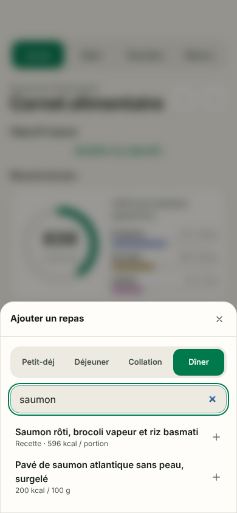
3. fill chercher un aliment — ok
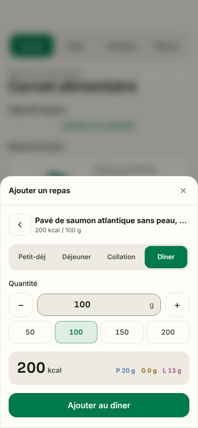
4. click choisir l'aliment (nom long) — ok
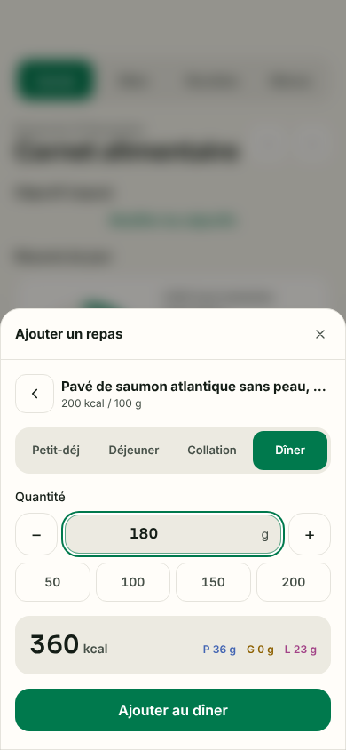
5. fill modifier la quantité — ok
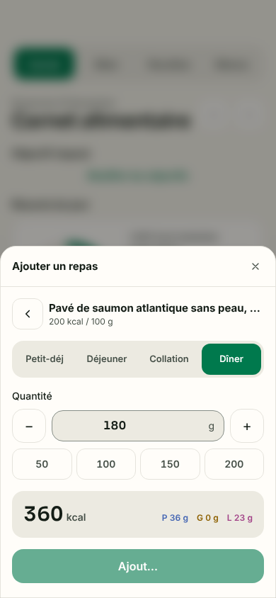
6. click valider l'aliment — ok
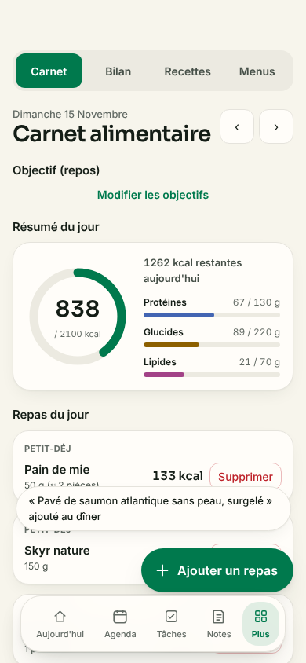
7. expect_text aliment présent au Carnet — ok
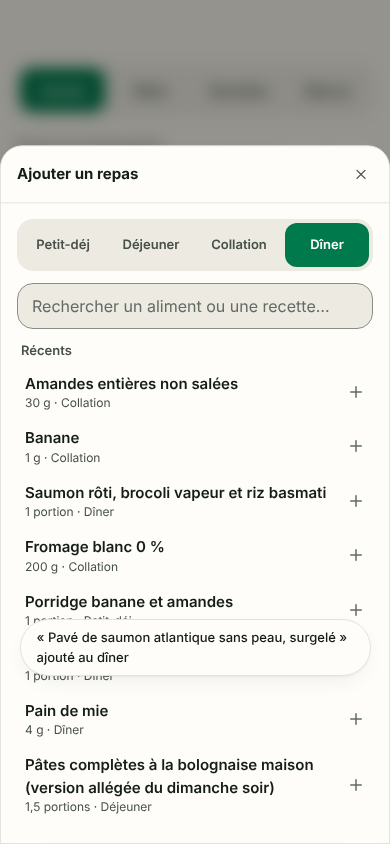
8. click second ajout : une recette — anomalie ⚠ requête échouée : GET http://localhost:3103/notes?_rsc=Sn1z23icjpob6HFI (net::ERR_ABORTED) ⚠ requête échouée : GET http://localhost:3103/nutrition/journal?_rsc=RJfCJDPo2_81Gl6r (net::ERR_ABORTED) ⚠ requête échouée : POST http://localhost:3103/nutrition (net::ERR_ABORTED) ⚠ requête échouée : GET http://localhost:3103/nutrition/menus?_rsc=IaIzwq4BH3-xGixr (net::ERR_ABORTED)
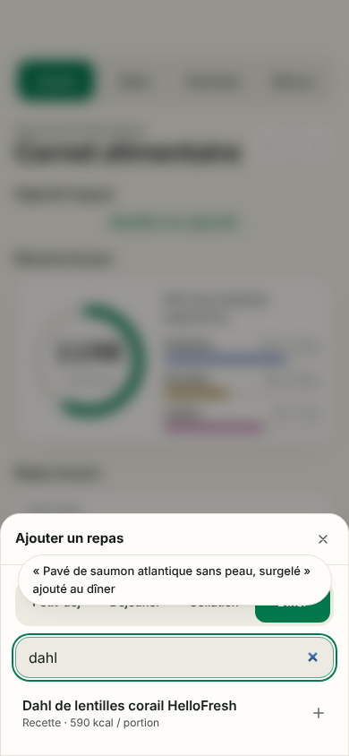
9. fill role=searchbox — anomalie ⚠ requête échouée : POST http://localhost:3103/nutrition (net::ERR_ABORTED)
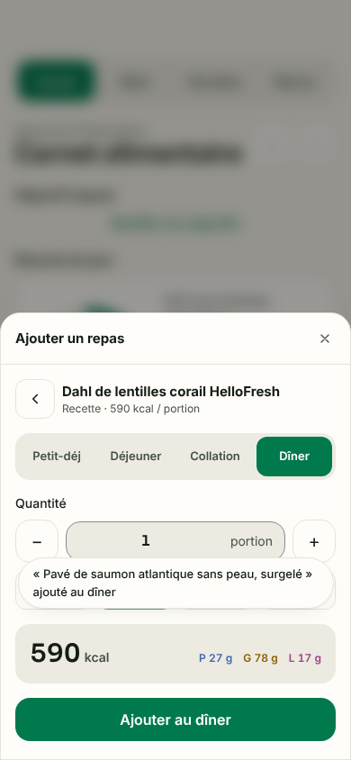
10. click choisir la recette — ok
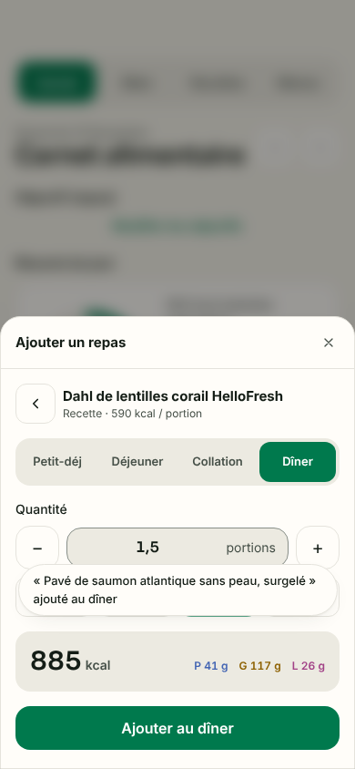
11. click pas de quantité +0,5 portion — ok
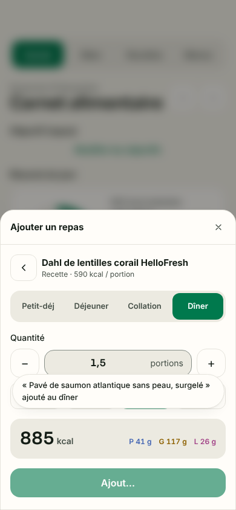
12. click valider la recette — ok
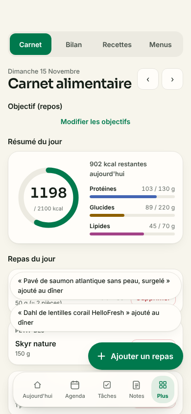
13. expect_text http://localhost:3103/nutrition — ok
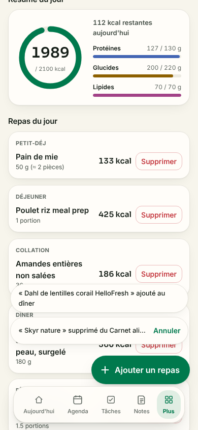
14. click supprimer un repas — anomalie ⚠ requête échouée : GET http://localhost:3103/notes?_rsc=Sn1z23icjpob6HFI (net::ERR_ABORTED) ⚠ requête échouée : GET http://localhost:3103/nutrition/journal?_rsc=RJfCJDPo2_81Gl6r (net::ERR_ABORTED) ⚠ requête échouée : GET http://localhost:3103/nutrition/menus?_rsc=IaIzwq4BH3-xGixr (net::ERR_ABORTED) ⚠ requête échouée : POST http://localhost:3103/nutrition (net::ERR_ABORTED)
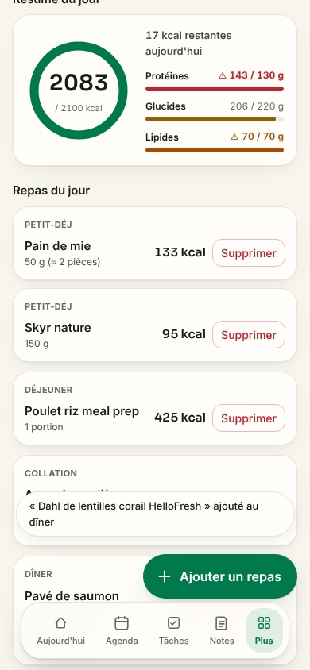
15. click Annuler dans le toast — ok16. expect_text repas revenu — ok17. click supprimer pour de bon — ok
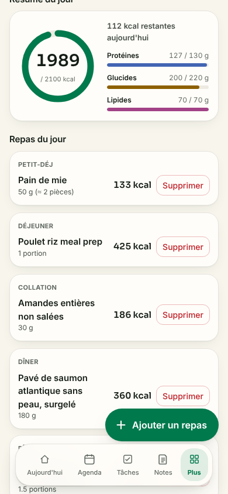
18. wait laisser expirer le toast — anomalie ⚠ requête échouée : POST http://localhost:3103/nutrition (net::ERR_ABORTED)
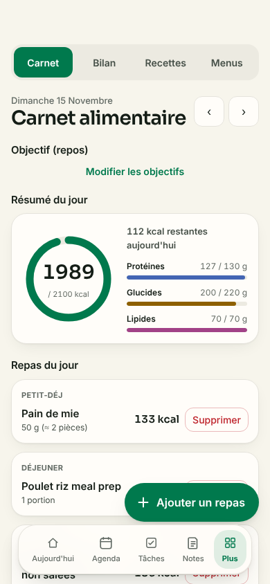
19. reload persistance — anomalie ⚠ requête échouée : GET http://localhost:3103/nutrition/journal?_rsc=RJfCJDPo2_81Gl6r (net::ERR_ABORTED) ⚠ HTTP 404 : GET http://localhost:3103/_vercel/speed-insights/script.js ⚠ console.error : Failed to load resource: the server responded with a status of 404 (Not Found) ⚠ console.error : Refused to execute script from 'http://localhost:3103/_vercel/speed-insights/script.js' because its MIME type ('text/html') is not executable, and strict MIME type checking is enabled. ⚠ requête échouée : GET http://localhost:3103/_vercel/speed-insights/script.js (net::ERR_ABORTED)20. expect_absent http://localhost:3103/nutrition — ok21. expect_text http://localhost:3103/nutrition — ok
2-carnet-jours-limites
1. goto Carnet, thème sombre — anomalie ⚠ HTTP 404 : GET http://localhost:3103/_vercel/speed-insights/script.js ⚠ console.error : Failed to load resource: the server responded with a status of 404 (Not Found) ⚠ console.error : Refused to execute script from 'http://localhost:3103/_vercel/speed-insights/script.js' because its MIME type ('text/plain') is not executable, and strict MIME type checking is enabled. ⚠ requête échouée : GET http://localhost:3103/_vercel/speed-insights/script.js (net::ERR_ABORTED) ⚠ requête échouée : GET http://localhost:3103/nutrition/menus?_rsc=mOWeNoMD-30R7sze (net::ERR_ABORTED)2. click veille (jour d'entraînement) — ok
6. scroll bas de la liste — anomalie ⚠ requête échouée : GET http://localhost:3103/nutrition/journal?date=2026-11-14&_rsc=pq64VSNVEqXei6Lb (net::ERR_ABORTED)
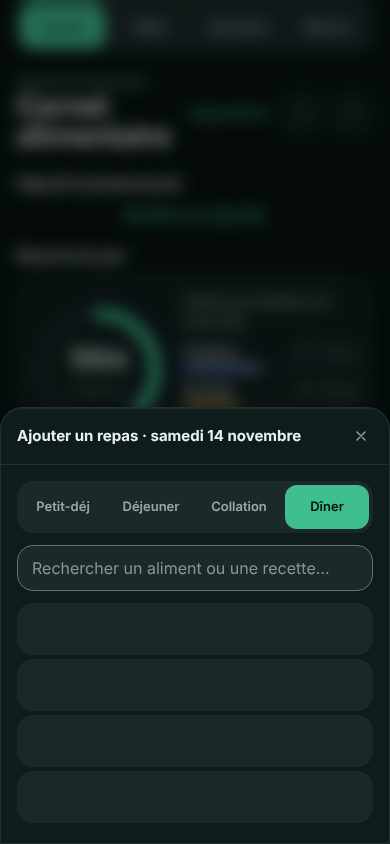
7. click ajout sur un jour passé — ok
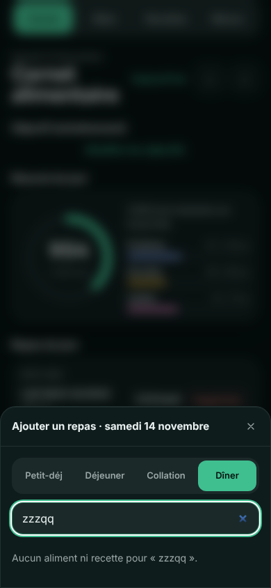
8. fill recherche sans résultat — ok
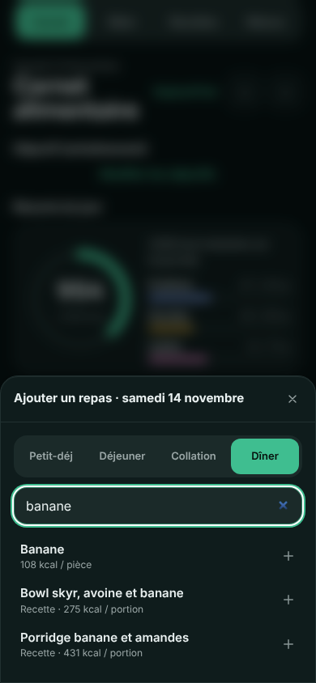
9. fill role=searchbox — ok
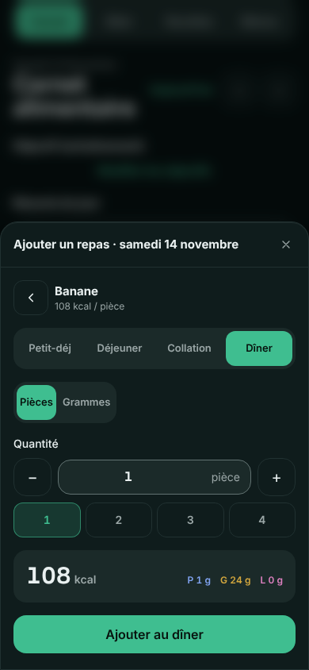
10. click aliment à la pièce — ok
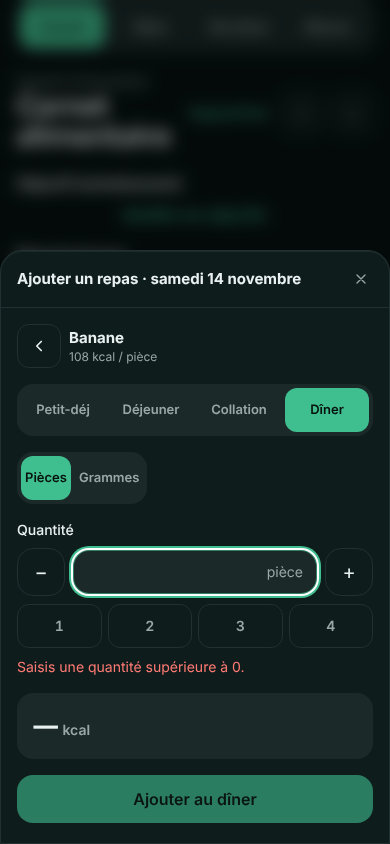
11. fill quantité vide — ok12. fill quantité nulle — ok
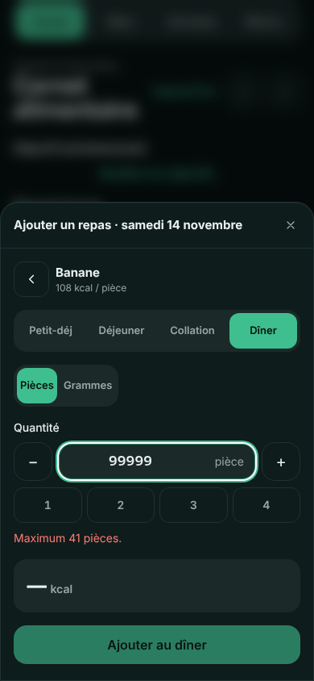
13. fill quantité énorme — ok
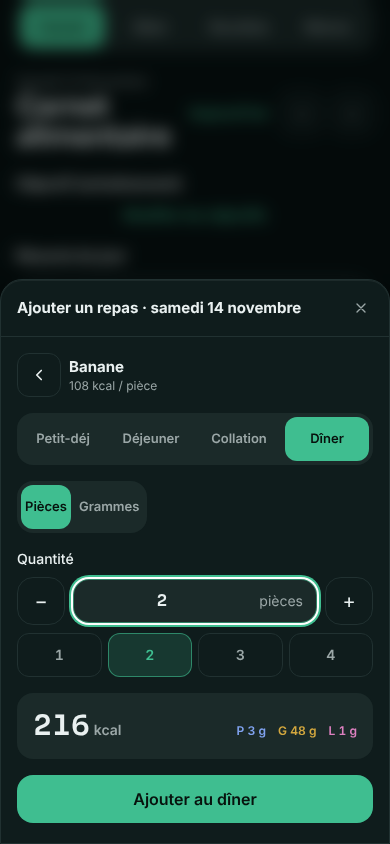
14. fill input[name=quantite-saisie] — ok
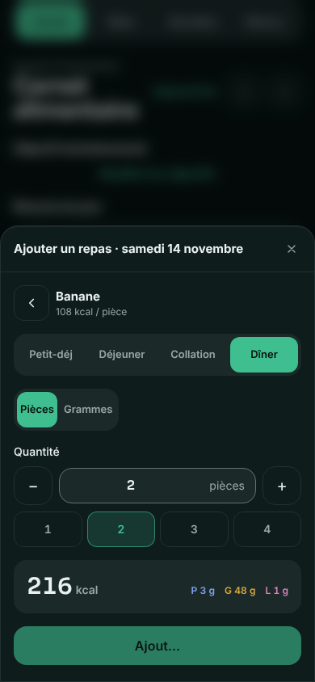
15. dblclick double tap sur valider — ok
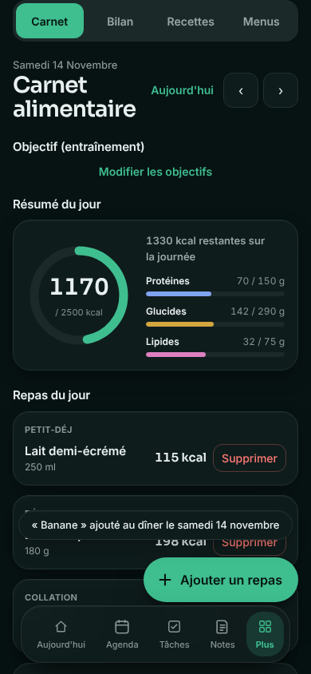
16. wait http://localhost:3103/nutrition/journal?date=2026-11-14 — anomalie ⚠ requête échouée : GET http://localhost:3103/notes?_rsc=ReFE4Y_505v8bis0 (net::ERR_ABORTED) ⚠ requête échouée : GET http://localhost:3103/nutrition/journal?_rsc=NCnCARwDGRMA6JXs (net::ERR_ABORTED) ⚠ requête échouée : GET http://localhost:3103/nutrition/menus?_rsc=mOWeNoMD-30R7sze (net::ERR_ABORTED) ⚠ requête échouée : POST http://localhost:3103/nutrition/journal?date=2026-11-14 (net::ERR_ABORTED)
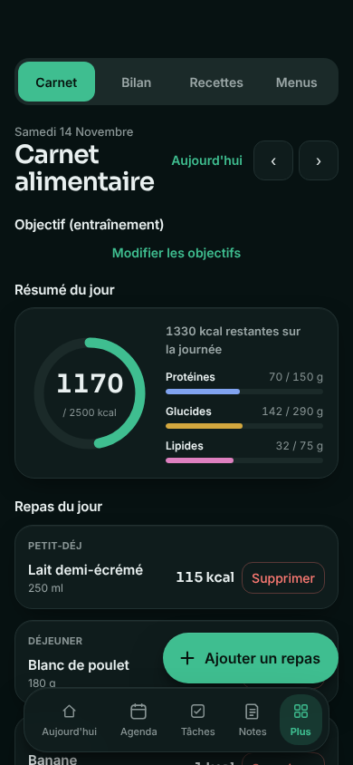
17. reload une seule banane attendue — anomalie ⚠ HTTP 404 : GET http://localhost:3103/_vercel/speed-insights/script.js ⚠ console.error : Failed to load resource: the server responded with a status of 404 (Not Found) ⚠ console.error : Refused to execute script from 'http://localhost:3103/_vercel/speed-insights/script.js' because its MIME type ('text/html') is not executable, and strict MIME type checking is enabled. ⚠ requête échouée : GET http://localhost:3103/_vercel/speed-insights/script.js (net::ERR_ABORTED) ⚠ requête échouée : GET http://localhost:3103/nutrition/menus?_rsc=mOWeNoMD-30R7sze (net::ERR_ABORTED)
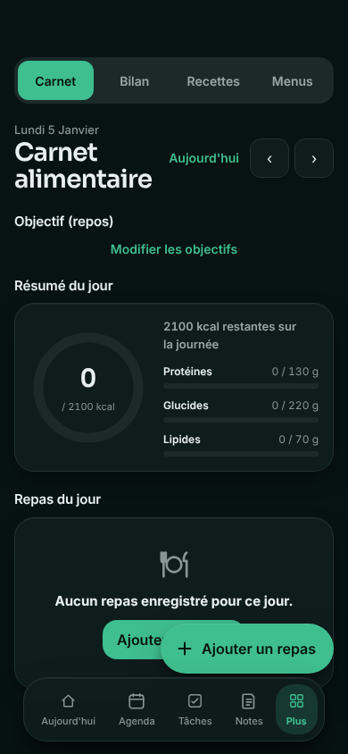
18. goto jour sans aucun repas (liste vide) — anomalie ⚠ requête échouée : GET http://localhost:3103/nutrition/menus?_rsc=mOWeNoMD-30R7sze (net::ERR_ABORTED) ⚠ requête échouée : GET http://localhost:3103/notes?_rsc=ReFE4Y_505v8bis0 (net::ERR_ABORTED) ⚠ HTTP 404 : GET http://localhost:3103/_vercel/speed-insights/script.js ⚠ console.error : Failed to load resource: the server responded with a status of 404 (Not Found) ⚠ console.error : Refused to execute script from 'http://localhost:3103/_vercel/speed-insights/script.js' because its MIME type ('text/html') is not executable, and strict MIME type checking is enabled. ⚠ requête échouée : GET http://localhost:3103/_vercel/speed-insights/script.js (net::ERR_ABORTED)19. goto date invalide dans l'URL — anomalie ⚠ HTTP 404 : GET http://localhost:3103/_vercel/speed-insights/script.js ⚠ console.error : Failed to load resource: the server responded with a status of 404 (Not Found) ⚠ console.error : Refused to execute script from 'http://localhost:3103/_vercel/speed-insights/script.js' because its MIME type ('text/html') is not executable, and strict MIME type checking is enabled. ⚠ requête échouée : GET http://localhost:3103/_vercel/speed-insights/script.js (net::ERR_ABORTED) ⚠ requête échouée : GET http://localhost:3103/nutrition/menus?_rsc=mOWeNoMD-30R7sze (net::ERR_ABORTED) ⚠ requête échouée : GET http://localhost:3103/notes?_rsc=ReFE4Y_505v8bis0 (net::ERR_ABORTED) ⚠ requête échouée : GET http://localhost:3103/nutrition?_rsc=lV44R-dSovzs4I3R (net::ERR_ABORTED)
3-menus-mange
1. goto Menus, semaine en cours — anomalie ⚠ HTTP 404 : GET http://localhost:3103/_vercel/speed-insights/script.js ⚠ console.error : Failed to load resource: the server responded with a status of 404 (Not Found) ⚠ console.error : Refused to execute script from 'http://localhost:3103/_vercel/speed-insights/script.js' because its MIME type ('text/plain') is not executable, and strict MIME type checking is enabled. ⚠ requête échouée : GET http://localhost:3103/_vercel/speed-insights/script.js (net::ERR_ABORTED) ⚠ requête échouée : GET http://localhost:3103/nutrition/journal?_rsc=j6EllVFPEmHf4CFf (net::ERR_ABORTED) ⚠ requête échouée : GET http://localhost:3103/notes?_rsc=tc2lWmmGE2MZ9vTY (net::ERR_ABORTED) ⚠ requête échouée : GET http://localhost:3103/nutrition?_rsc=3bRCAcPmtUP2qLBm (net::ERR_ABORTED)
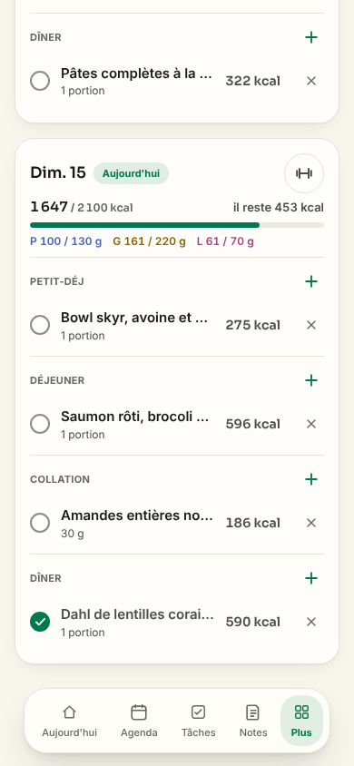
2. click cocher mangé (dîner du jour) — ok
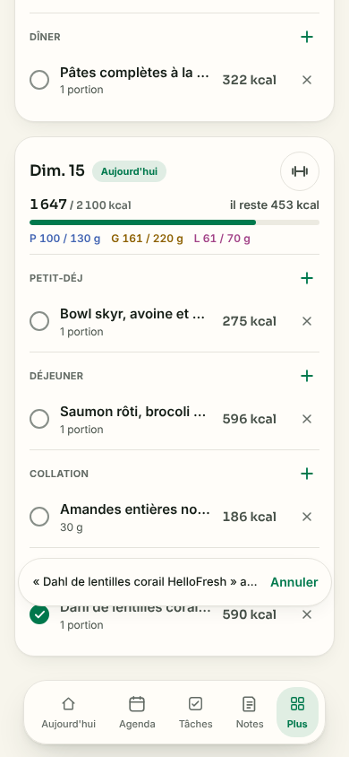
3. wait http://localhost:3103/nutrition/menus — anomalie ⚠ requête échouée : GET http://localhost:3103/notes?_rsc=gFW0MxFV8ywPcvsL (net::ERR_ABORTED) ⚠ requête échouée : POST http://localhost:3103/nutrition/menus (net::ERR_ABORTED)
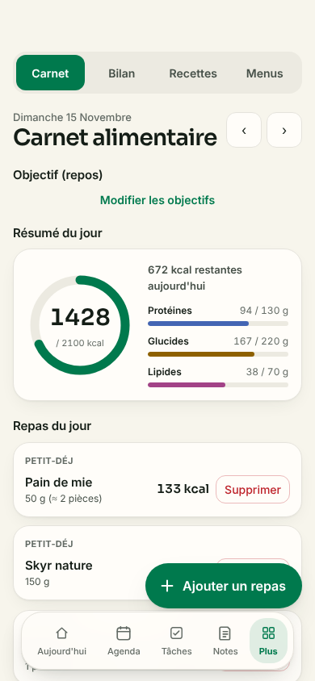
4. goto le Carnet doit contenir le Dahl — anomalie ⚠ HTTP 404 : GET http://localhost:3103/_vercel/speed-insights/script.js ⚠ console.error : Failed to load resource: the server responded with a status of 404 (Not Found) ⚠ console.error : Refused to execute script from 'http://localhost:3103/_vercel/speed-insights/script.js' because its MIME type ('text/html') is not executable, and strict MIME type checking is enabled. ⚠ requête échouée : GET http://localhost:3103/_vercel/speed-insights/script.js (net::ERR_ABORTED) ⚠ requête échouée : GET http://localhost:3103/nutrition/journal?_rsc=RJfCJDPo2_81Gl6r (net::ERR_ABORTED) ⚠ requête échouée : GET http://localhost:3103/nutrition/menus?_rsc=IaIzwq4BH3-xGixr (net::ERR_ABORTED) ⚠ requête échouée : GET http://localhost:3103/notes?_rsc=Sn1z23icjpob6HFI (net::ERR_ABORTED)5. expect_text http://localhost:3103/nutrition — ok6. goto http://localhost:3103/nutrition/menus — anomalie ⚠ requête échouée : GET http://localhost:3103/nutrition/journal?_rsc=j6EllVFPEmHf4CFf (net::ERR_ABORTED) ⚠ requête échouée : GET http://localhost:3103/notes?_rsc=tc2lWmmGE2MZ9vTY (net::ERR_ABORTED) ⚠ requête échouée : GET http://localhost:3103/nutrition?_rsc=3bRCAcPmtUP2qLBm (net::ERR_ABORTED) ⚠ HTTP 404 : GET http://localhost:3103/_vercel/speed-insights/script.js ⚠ console.error : Failed to load resource: the server responded with a status of 404 (Not Found) ⚠ console.error : Refused to execute script from 'http://localhost:3103/_vercel/speed-insights/script.js' because its MIME type ('text/html') is not executable, and strict MIME type checking is enabled. ⚠ requête échouée : GET http://localhost:3103/_vercel/speed-insights/script.js (net::ERR_ABORTED)7. click décocher — ok8. wait http://localhost:3103/nutrition/menus — anomalie ⚠ requête échouée : GET http://localhost:3103/notes?_rsc=gFW0MxFV8ywPcvsL (net::ERR_ABORTED) ⚠ requête échouée : POST http://localhost:3103/nutrition/menus (net::ERR_ABORTED)9. goto le Carnet ne doit plus contenir le Dahl — anomalie ⚠ requête échouée : GET http://localhost:3103/notes?_rsc=Sn1z23icjpob6HFI (net::ERR_ABORTED) ⚠ requête échouée : GET http://localhost:3103/nutrition/menus?_rsc=IaIzwq4BH3-xGixr (net::ERR_ABORTED) ⚠ HTTP 404 : GET http://localhost:3103/_vercel/speed-insights/script.js ⚠ console.error : Failed to load resource: the server responded with a status of 404 (Not Found) ⚠ console.error : Refused to execute script from 'http://localhost:3103/_vercel/speed-insights/script.js' because its MIME type ('text/html') is not executable, and strict MIME type checking is enabled. ⚠ requête échouée : GET http://localhost:3103/_vercel/speed-insights/script.js (net::ERR_ABORTED)10. expect_absent http://localhost:3103/nutrition — ok11. goto http://localhost:3103/nutrition/menus — anomalie ⚠ requête échouée : GET http://localhost:3103/nutrition/journal?_rsc=j6EllVFPEmHf4CFf (net::ERR_ABORTED) ⚠ requête échouée : GET http://localhost:3103/notes?_rsc=tc2lWmmGE2MZ9vTY (net::ERR_ABORTED) ⚠ requête échouée : GET http://localhost:3103/nutrition?_rsc=3bRCAcPmtUP2qLBm (net::ERR_ABORTED) ⚠ HTTP 404 : GET http://localhost:3103/_vercel/speed-insights/script.js ⚠ console.error : Failed to load resource: the server responded with a status of 404 (Not Found) ⚠ console.error : Refused to execute script from 'http://localhost:3103/_vercel/speed-insights/script.js' because its MIME type ('text/html') is not executable, and strict MIME type checking is enabled. ⚠ requête échouée : GET http://localhost:3103/_vercel/speed-insights/script.js (net::ERR_ABORTED)12. dblclick double tap sur la coche — ok
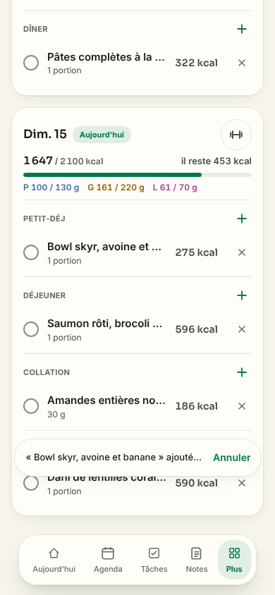
13. wait http://localhost:3103/nutrition/menus — anomalie ⚠ requête échouée : GET http://localhost:3103/notes?_rsc=gFW0MxFV8ywPcvsL (net::ERR_ABORTED) ⚠ requête échouée : POST http://localhost:3103/nutrition/menus (net::ERR_ABORTED)14. reload état final après double tap — anomalie ⚠ requête échouée : POST http://localhost:3103/nutrition/menus (net::ERR_ABORTED) ⚠ HTTP 404 : GET http://localhost:3103/_vercel/speed-insights/script.js ⚠ console.error : Failed to load resource: the server responded with a status of 404 (Not Found) ⚠ console.error : Refused to execute script from 'http://localhost:3103/_vercel/speed-insights/script.js' because its MIME type ('text/html') is not executable, and strict MIME type checking is enabled. ⚠ requête échouée : GET http://localhost:3103/_vercel/speed-insights/script.js (net::ERR_ABORTED) ⚠ requête échouée : GET http://localhost:3103/nutrition/journal?_rsc=j6EllVFPEmHf4CFf (net::ERR_ABORTED) ⚠ requête échouée : GET http://localhost:3103/notes?_rsc=tc2lWmmGE2MZ9vTY (net::ERR_ABORTED)
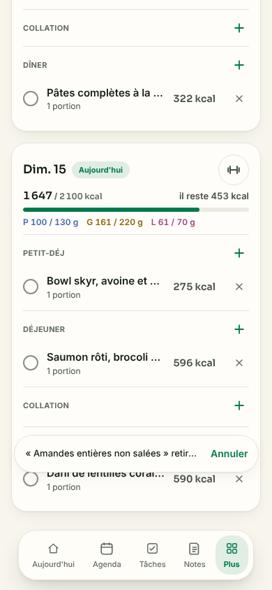
15. click retirer un repas — ok
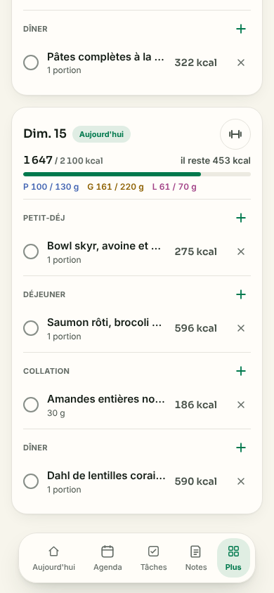
16. click Annuler le retrait — ok17. expect_text http://localhost:3103/nutrition/menus — ok
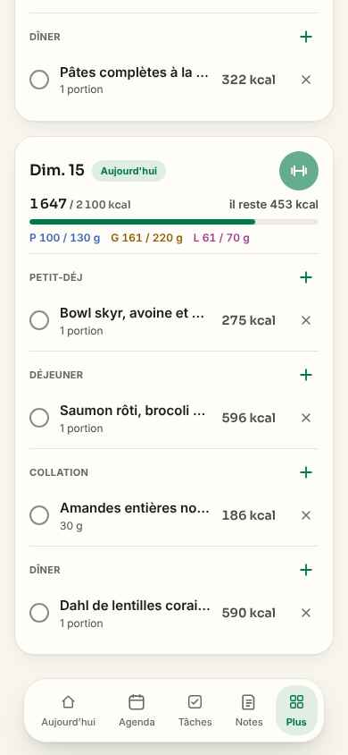
18. click bascule repos / entraînement du jour — ok
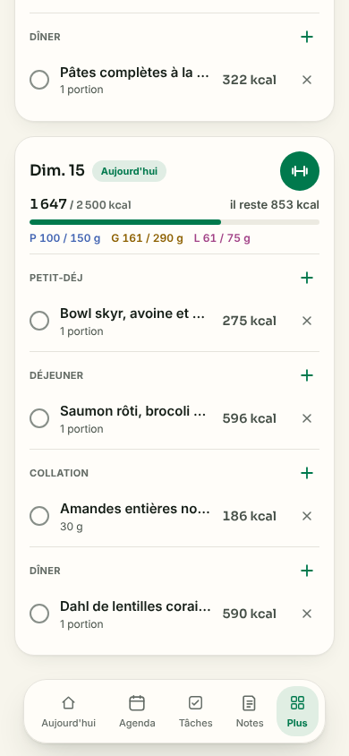
19. wait http://localhost:3103/nutrition/menus — anomalie ⚠ requête échouée : GET http://localhost:3103/notes?_rsc=gFW0MxFV8ywPcvsL (net::ERR_ABORTED) ⚠ requête échouée : POST http://localhost:3103/nutrition/menus (net::ERR_ABORTED)20. reload bascule persistée ? — anomalie ⚠ HTTP 404 : GET http://localhost:3103/_vercel/speed-insights/script.js ⚠ console.error : Failed to load resource: the server responded with a status of 404 (Not Found) ⚠ console.error : Refused to execute script from 'http://localhost:3103/_vercel/speed-insights/script.js' because its MIME type ('text/html') is not executable, and strict MIME type checking is enabled. ⚠ requête échouée : GET http://localhost:3103/_vercel/speed-insights/script.js (net::ERR_ABORTED) ⚠ requête échouée : GET http://localhost:3103/notes?_rsc=tc2lWmmGE2MZ9vTY (net::ERR_ABORTED) ⚠ requête échouée : GET http://localhost:3103/nutrition?_rsc=3bRCAcPmtUP2qLBm (net::ERR_ABORTED)
4-menus-courses-copie
1. goto http://localhost:3103/nutrition/menus — anomalie ⚠ HTTP 404 : GET http://localhost:3103/_vercel/speed-insights/script.js ⚠ console.error : Failed to load resource: the server responded with a status of 404 (Not Found) ⚠ console.error : Refused to execute script from 'http://localhost:3103/_vercel/speed-insights/script.js' because its MIME type ('text/plain') is not executable, and strict MIME type checking is enabled. ⚠ requête échouée : GET http://localhost:3103/_vercel/speed-insights/script.js (net::ERR_ABORTED) ⚠ requête échouée : GET http://localhost:3103/nutrition/journal?_rsc=j6EllVFPEmHf4CFf (net::ERR_ABORTED) ⚠ requête échouée : GET http://localhost:3103/notes?_rsc=tc2lWmmGE2MZ9vTY (net::ERR_ABORTED) ⚠ requête échouée : GET http://localhost:3103/nutrition?_rsc=3bRCAcPmtUP2qLBm (net::ERR_ABORTED)2. click ajouter au créneau collation du lundi — ok
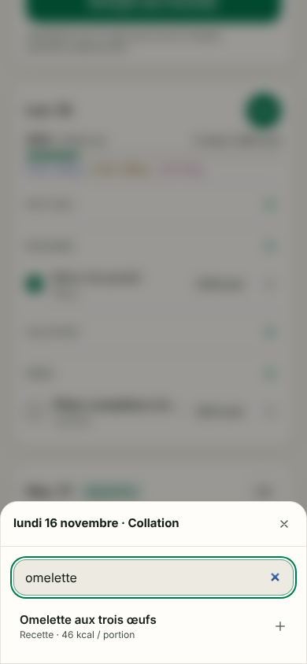
3. fill role=searchbox — ok
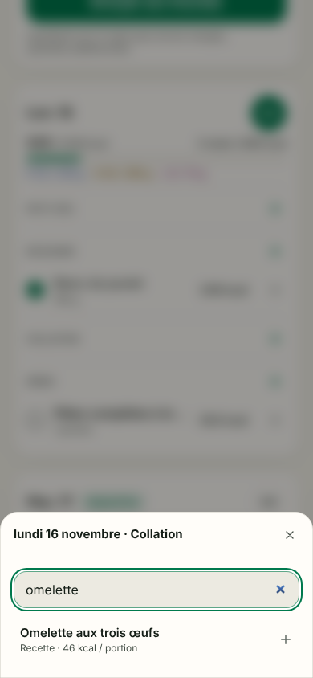
4. wait laisser la feuille se stabiliser — ok
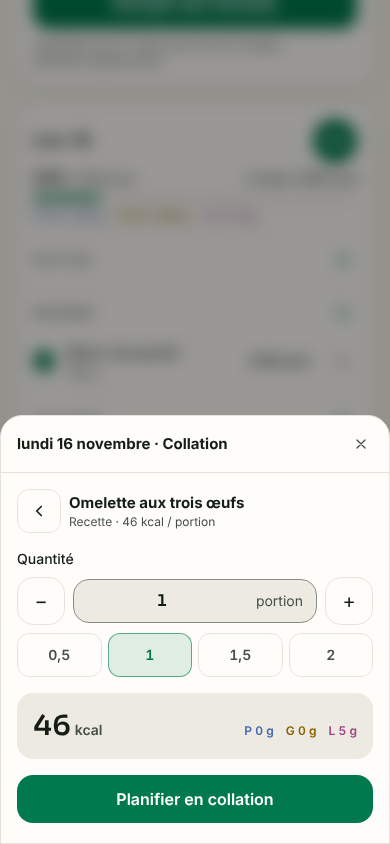
5. click role=dialog >> role=button[name=/Omelette aux trois/i] — ok
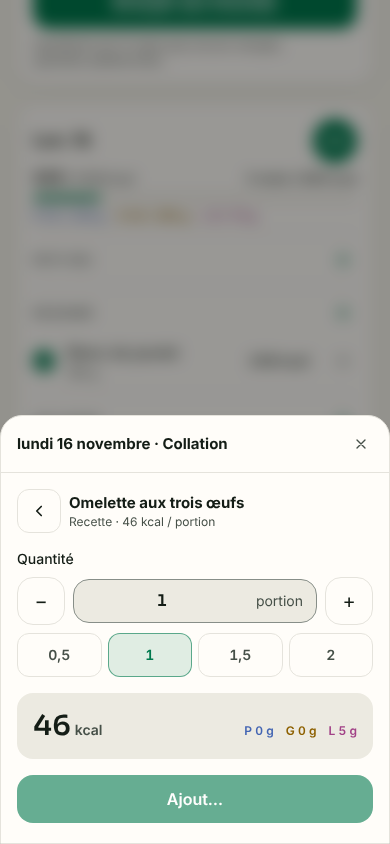
6. click valider — ok
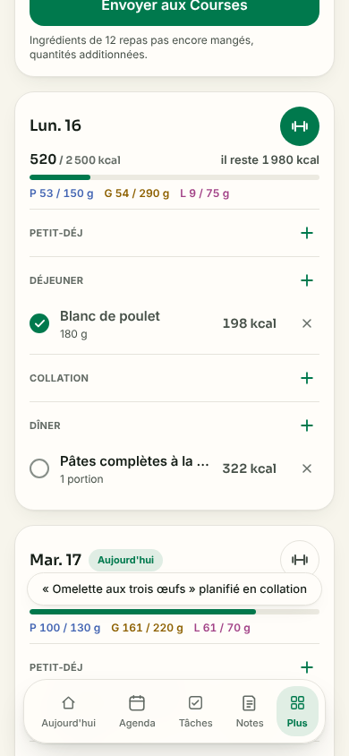
7. expect_text http://localhost:3103/nutrition/menus — ok
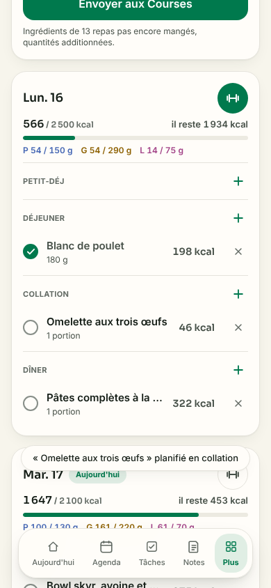
8. scroll haut de page : carte de la semaine — anomalie ⚠ requête échouée : GET http://localhost:3103/notes?_rsc=tc2lWmmGE2MZ9vTY (net::ERR_ABORTED) ⚠ requête échouée : POST http://localhost:3103/nutrition/menus (net::ERR_ABORTED)
11. click second envoi : aucun doublon attendu — ok12. wait http://localhost:3103/nutrition/menus — anomalie ⚠ requête échouée : GET http://localhost:3103/notes?_rsc=gFW0MxFV8ywPcvsL (net::ERR_ABORTED)13. goto liste de courses obtenue — anomalie ⚠ HTTP 404 : GET http://localhost:3103/_vercel/speed-insights/script.js ⚠ console.error : Failed to load resource: the server responded with a status of 404 (Not Found) ⚠ console.error : Refused to execute script from 'http://localhost:3103/_vercel/speed-insights/script.js' because its MIME type ('text/html') is not executable, and strict MIME type checking is enabled. ⚠ requête échouée : GET http://localhost:3103/_vercel/speed-insights/script.js (net::ERR_ABORTED) ⚠ requête échouée : GET http://localhost:3103/nutrition?_rsc=oyVt-Ax8zMpCuAam (net::ERR_ABORTED)14. scroll http://localhost:3103/courses — ok15. goto http://localhost:3103/nutrition/menus — anomalie ⚠ HTTP 404 : GET http://localhost:3103/_vercel/speed-insights/script.js ⚠ console.error : Failed to load resource: the server responded with a status of 404 (Not Found) ⚠ console.error : Refused to execute script from 'http://localhost:3103/_vercel/speed-insights/script.js' because its MIME type ('text/html') is not executable, and strict MIME type checking is enabled. ⚠ requête échouée : GET http://localhost:3103/_vercel/speed-insights/script.js (net::ERR_ABORTED) ⚠ requête échouée : GET http://localhost:3103/notes?_rsc=tc2lWmmGE2MZ9vTY (net::ERR_ABORTED) ⚠ requête échouée : GET http://localhost:3103/nutrition/journal?_rsc=j6EllVFPEmHf4CFf (net::ERR_ABORTED) ⚠ requête échouée : GET http://localhost:3103/nutrition?_rsc=3bRCAcPmtUP2qLBm (net::ERR_ABORTED)16. scroll http://localhost:3103/nutrition/menus — ok17. click semaine suivante (vide) — ok18. click copie — ok19. wait http://localhost:3103/nutrition/menus?semaine=2026-11-23 — anomalie ⚠ requête échouée : GET http://localhost:3103/nutrition/menus?semaine=2026-11-16&_rsc=BU5HpMWOiDd8TVZv (net::ERR_ABORTED) ⚠ requête échouée : GET http://localhost:3103/notes?_rsc=gFW0MxFV8ywPcvsL (net::ERR_ABORTED) ⚠ requête échouée : POST http://localhost:3103/nutrition/menus?semaine=2026-11-23 (net::ERR_ABORTED)20. reload persistance de la copie — anomalie ⚠ requête échouée : GET http://localhost:3103/nutrition?_rsc=3bRCAcPmtUP2qLBm (net::ERR_ABORTED) ⚠ HTTP 404 : GET http://localhost:3103/_vercel/speed-insights/script.js ⚠ console.error : Failed to load resource: the server responded with a status of 404 (Not Found) ⚠ console.error : Refused to execute script from 'http://localhost:3103/_vercel/speed-insights/script.js' because its MIME type ('text/html') is not executable, and strict MIME type checking is enabled. ⚠ requête échouée : GET http://localhost:3103/_vercel/speed-insights/script.js (net::ERR_ABORTED)21. scroll http://localhost:3103/nutrition/menus?semaine=2026-11-23 — ok22. click encore une semaine — ok23. click [aria-label='Semaine précédente'] — anomalie ⚠ requête échouée : GET http://localhost:3103/nutrition/menus?semaine=2026-11-30&_rsc=rMnu_bfo-ZaWN6Hh (net::ERR_ABORTED)24. back retour arrière du navigateur — anomalie ⚠ requête échouée : GET http://localhost:3103/nutrition/menus?semaine=2026-11-16&_rsc=rMnu_bfo-ZaWN6Hh (net::ERR_ABORTED) ⚠ HTTP 404 : GET http://localhost:3103/_vercel/speed-insights/script.js ⚠ console.error : Failed to load resource: the server responded with a status of 404 (Not Found) ⚠ console.error : Refused to execute script from 'http://localhost:3103/_vercel/speed-insights/script.js' because its MIME type ('text/html') is not executable, and strict MIME type checking is enabled. ⚠ requête échouée : GET http://localhost:3103/_vercel/speed-insights/script.js (net::ERR_ABORTED)
5-recette-creer-modifier
1. goto http://localhost:3103/nutrition/recettes — anomalie ⚠ HTTP 404 : GET http://localhost:3103/_vercel/speed-insights/script.js ⚠ console.error : Failed to load resource: the server responded with a status of 404 (Not Found) ⚠ console.error : Refused to execute script from 'http://localhost:3103/_vercel/speed-insights/script.js' because its MIME type ('text/plain') is not executable, and strict MIME type checking is enabled. ⚠ requête échouée : GET http://localhost:3103/_vercel/speed-insights/script.js (net::ERR_ABORTED) ⚠ requête échouée : GET http://localhost:3103/notes?_rsc=V6LDxjTYF9Hcqkq- (net::ERR_ABORTED) ⚠ requête échouée : GET http://localhost:3103/nutrition?_rsc=sw2pi3DjxZBW9EPd (net::ERR_ABORTED) ⚠ requête échouée : GET http://localhost:3103/nutrition/journal?_rsc=gTQNfE_KcskDALzN (net::ERR_ABORTED) ⚠ requête échouée : GET http://localhost:3103/nutrition/menus?_rsc=P_U07AWgBD50QkDo (net::ERR_ABORTED) ⚠ requête échouée : GET http://localhost:3103/nutrition/recettes/00000000-0000-4000-8000-000000000216?_rsc=LdB1tpLyTapDRyuB (net::ERR_ABORTED)2. fill recherche par ingrédient — ok3. fill role=searchbox — ok4. click role=button[name=/ajouter une recette/i] — ok5. click valider avec le nom vide — ok6. fill nom très long — ok7. fill input[name=portions] — ok8. fill input[name=temps_prepa_min] — ok9. dblclick double tap sur Ajouter — ok10. wait http://localhost:3103/nutrition/recettes — anomalie ⚠ requête échouée : GET http://localhost:3103/notes?_rsc=V6LDxjTYF9Hcqkq- (net::ERR_ABORTED) ⚠ requête échouée : POST http://localhost:3103/nutrition/recettes (net::ERR_ABORTED) ⚠ requête échouée : GET http://localhost:3103/nutrition/recettes?_rsc=e3EQ4dxCrm2RCKbS (net::ERR_ABORTED) ⚠ requête échouée : GET http://localhost:3103/nutrition/journal?_rsc=gTQNfE_KcskDALzN (net::ERR_ABORTED) ⚠ requête échouée : GET http://localhost:3103/nutrition/menus?_rsc=P_U07AWgBD50QkDo (net::ERR_ABORTED) ⚠ requête échouée : GET http://localhost:3103/nutrition/recettes/00000000-0000-4000-8000-000000000216?_rsc=LdB1tpLyTapDRyuB (net::ERR_ABORTED)11. screenshot après création — ok12. goto liste : une seule nouvelle recette ? — anomalie ⚠ HTTP 404 : GET http://localhost:3103/_vercel/speed-insights/script.js ⚠ console.error : Failed to load resource: the server responded with a status of 404 (Not Found) ⚠ console.error : Refused to execute script from 'http://localhost:3103/_vercel/speed-insights/script.js' because its MIME type ('text/html') is not executable, and strict MIME type checking is enabled. ⚠ requête échouée : GET http://localhost:3103/_vercel/speed-insights/script.js (net::ERR_ABORTED) ⚠ requête échouée : GET http://localhost:3103/nutrition/journal?_rsc=gTQNfE_KcskDALzN (net::ERR_ABORTED) ⚠ requête échouée : GET http://localhost:3103/nutrition/menus?_rsc=P_U07AWgBD50QkDo (net::ERR_ABORTED) ⚠ requête échouée : GET http://localhost:3103/nutrition/recettes/00000000-0000-4000-8000-000000000216?_rsc=LdB1tpLyTapDRyuB (net::ERR_ABORTED) ⚠ requête échouée : GET http://localhost:3103/notes?_rsc=V6LDxjTYF9Hcqkq- (net::ERR_ABORTED) ⚠ requête échouée : GET http://localhost:3103/nutrition?_rsc=sw2pi3DjxZBW9EPd (net::ERR_ABORTED)13. click ouvrir la fiche (nom très long) — ok14. click modifier la recette — anomalie ⚠ requête échouée : GET http://localhost:3103/nutrition/recettes/97ff3ac8-ea60-4222-9fac-eaea98c896be?_rsc=nvje8DTLSuuNQUrL (net::ERR_ABORTED)15. fill input[name=nom] — ok16. click role=button[name=/^Enregistrer/] — ok17. expect_text http://localhost:3103/nutrition/recettes/97ff3ac8-ea60-4222-9fac-eaea98c896be — anomalie ⚠ requête échouée : GET http://localhost:3103/notes?_rsc=gFW0MxFV8ywPcvsL (net::ERR_ABORTED) ⚠ requête échouée : POST http://localhost:3103/nutrition/recettes/97ff3ac8-ea60-4222-9fac-eaea98c896be (net::ERR_ABORTED)18. select ingrédient à la pièce — ok19. fill 3 pièces (le champ indique « pièce ») — ok20. click role=button[name=/Ajouter l.ingrédient/] — ok21. wait http://localhost:3103/nutrition/recettes/97ff3ac8-ea60-4222-9fac-eaea98c896be — anomalie ⚠ requête échouée : GET http://localhost:3103/notes?_rsc=gFW0MxFV8ywPcvsL (net::ERR_ABORTED) ⚠ requête échouée : POST http://localhost:3103/nutrition/recettes/97ff3ac8-ea60-4222-9fac-eaea98c896be (net::ERR_ABORTED)22. reload kcal par portion pour 3 œufs / 3 portions (attendu : environ 80) — anomalie ⚠ HTTP 404 : GET http://localhost:3103/_vercel/speed-insights/script.js ⚠ console.error : Failed to load resource: the server responded with a status of 404 (Not Found) ⚠ console.error : Refused to execute script from 'http://localhost:3103/_vercel/speed-insights/script.js' because its MIME type ('text/html') is not executable, and strict MIME type checking is enabled. ⚠ requête échouée : GET http://localhost:3103/_vercel/speed-insights/script.js (net::ERR_ABORTED) ⚠ requête échouée : GET http://localhost:3103/nutrition?_rsc=yNz3dV729Zgrm-_A (net::ERR_ABORTED)23. select select[name=aliment_id] — ok24. fill input[name=quantite] — échec : locator.fill: Timeout 5000ms exceeded.25. click role=button[name=/Ajouter l.ingrédient/] — ok26. wait http://localhost:3103/nutrition/recettes/97ff3ac8-ea60-4222-9fac-eaea98c896be — ok27. click supprimer un ingrédient — échec : locator.click: Timeout 5000ms exceeded.28. click Annuler — échec : locator.click: Timeout 5000ms exceeded.29. reload http://localhost:3103/nutrition/recettes/97ff3ac8-ea60-4222-9fac-eaea98c896be — anomalie ⚠ HTTP 404 : GET http://localhost:3103/_vercel/speed-insights/script.js ⚠ console.error : Failed to load resource: the server responded with a status of 404 (Not Found) ⚠ console.error : Refused to execute script from 'http://localhost:3103/_vercel/speed-insights/script.js' because its MIME type ('text/html') is not executable, and strict MIME type checking is enabled. ⚠ requête échouée : GET http://localhost:3103/_vercel/speed-insights/script.js (net::ERR_ABORTED) ⚠ requête échouée : GET http://localhost:3103/notes?_rsc=trdq3jQLpI3KPtmF (net::ERR_ABORTED) ⚠ requête échouée : GET http://localhost:3103/nutrition?_rsc=yNz3dV729Zgrm-_A (net::ERR_ABORTED)30. expect_text http://localhost:3103/nutrition/recettes/97ff3ac8-ea60-4222-9fac-eaea98c896be — échec : locator.waitFor: Timeout 5000ms exceeded.
6-bilan-objectifs
1. goto Bilan, thème sombre — anomalie ⚠ HTTP 404 : GET http://localhost:3103/_vercel/speed-insights/script.js ⚠ console.error : Failed to load resource: the server responded with a status of 404 (Not Found) ⚠ console.error : Refused to execute script from 'http://localhost:3103/_vercel/speed-insights/script.js' because its MIME type ('text/plain') is not executable, and strict MIME type checking is enabled. ⚠ requête échouée : GET http://localhost:3103/_vercel/speed-insights/script.js (net::ERR_ABORTED) ⚠ requête échouée : GET http://localhost:3103/nutrition/journal?_rsc=RPH5jqhkb3AnFVa1 (net::ERR_ABORTED) ⚠ requête échouée : GET http://localhost:3103/nutrition?_rsc=mv2ZPQG8I9sMu1qE (net::ERR_ABORTED)2. scroll http://localhost:3103/nutrition/bilan — ok3. scroll http://localhost:3103/nutrition/bilan — ok4. scroll http://localhost:3103/nutrition/bilan — ok5. goto http://localhost:3103/nutrition/journal — anomalie ⚠ HTTP 404 : GET http://localhost:3103/_vercel/speed-insights/script.js ⚠ console.error : Failed to load resource: the server responded with a status of 404 (Not Found) ⚠ console.error : Refused to execute script from 'http://localhost:3103/_vercel/speed-insights/script.js' because its MIME type ('text/html') is not executable, and strict MIME type checking is enabled. ⚠ requête échouée : GET http://localhost:3103/_vercel/speed-insights/script.js (net::ERR_ABORTED) ⚠ requête échouée : GET http://localhost:3103/nutrition/menus?_rsc=mOWeNoMD-30R7sze (net::ERR_ABORTED) ⚠ requête échouée : GET http://localhost:3103/notes?_rsc=ReFE4Y_505v8bis0 (net::ERR_ABORTED)6. click role=button[name=/modifier les objectifs/i] — ok7. fill cible kcal vide — ok8. click enregistrer avec un champ vide — ok9. fill form input[type=number] >> nth=0 — ok10. click role=button[name=/^Enregistrer/] — ok11. wait http://localhost:3103/nutrition/journal — anomalie ⚠ requête échouée : GET http://localhost:3103/notes?_rsc=gFW0MxFV8ywPcvsL (net::ERR_ABORTED) ⚠ requête échouée : GET http://localhost:3103/nutrition/journal?date=2026-11-14&_rsc=ioZRL0euSxsaB-zU (net::ERR_ABORTED) ⚠ requête échouée : GET http://localhost:3103/nutrition/menus?_rsc=gQen-odGrH4v_fNm (net::ERR_ABORTED) ⚠ requête échouée : POST http://localhost:3103/nutrition/journal (net::ERR_ABORTED)12. reload cible persistée ? — anomalie ⚠ requête échouée : GET http://localhost:3103/nutrition/menus?_rsc=mOWeNoMD-30R7sze (net::ERR_ABORTED) ⚠ requête échouée : GET http://localhost:3103/notes?_rsc=ReFE4Y_505v8bis0 (net::ERR_ABORTED) ⚠ requête échouée : GET http://localhost:3103/nutrition?_rsc=lV44R-dSovzs4I3R (net::ERR_ABORTED) ⚠ HTTP 404 : GET http://localhost:3103/_vercel/speed-insights/script.js ⚠ console.error : Failed to load resource: the server responded with a status of 404 (Not Found) ⚠ console.error : Refused to execute script from 'http://localhost:3103/_vercel/speed-insights/script.js' because its MIME type ('text/html') is not executable, and strict MIME type checking is enabled. ⚠ requête échouée : GET http://localhost:3103/_vercel/speed-insights/script.js (net::ERR_ABORTED)13. expect_text http://localhost:3103/nutrition/journal — ok14. goto http://localhost:3103/nutrition/recettes — anomalie ⚠ HTTP 404 : GET http://localhost:3103/_vercel/speed-insights/script.js ⚠ console.error : Failed to load resource: the server responded with a status of 404 (Not Found) ⚠ console.error : Refused to execute script from 'http://localhost:3103/_vercel/speed-insights/script.js' because its MIME type ('text/html') is not executable, and strict MIME type checking is enabled. ⚠ requête échouée : GET http://localhost:3103/_vercel/speed-insights/script.js (net::ERR_ABORTED) ⚠ requête échouée : GET http://localhost:3103/notes?_rsc=V6LDxjTYF9Hcqkq- (net::ERR_ABORTED) ⚠ requête échouée : GET http://localhost:3103/nutrition?_rsc=sw2pi3DjxZBW9EPd (net::ERR_ABORTED) ⚠ requête échouée : GET http://localhost:3103/nutrition/menus?_rsc=P_U07AWgBD50QkDo (net::ERR_ABORTED) ⚠ requête échouée : GET http://localhost:3103/nutrition/journal?_rsc=gTQNfE_KcskDALzN (net::ERR_ABORTED) ⚠ requête échouée : GET http://localhost:3103/nutrition/recettes/00000000-0000-4000-8000-000000000216?_rsc=LdB1tpLyTapDRyuB (net::ERR_ABORTED)15. click fiche d'une recette au nom long, sombre — ok16. scroll http://localhost:3103/nutrition/recettes/00000000-0000-4000-8000-000000000213 — anomalie ⚠ requête échouée : GET http://localhost:3103/nutrition/recettes/00000000-0000-4000-8000-000000000213?_rsc=ZlkL2oDnEoYsA0U3 (net::ERR_ABORTED)